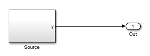
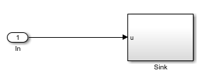

A device driver block is a specialized MATLAB System block that generates custom C/C++ code when deployed to a Raspberry Pi™ hardware board. Device driver blocks provide easy access to features of hardware boards, such as communication protocols or hardware libraries, not included in the default Simulink Support Package for Raspberry Pi Hardware.
A Simulink® device driver block can be generalized to one of two groups based on their port types:
Source blocks have output ports only. During simulation, a source block outputs a predetermined signal. This signal can be created from a random number generator, a stored array, or a constant value. When deployed to hardware, a source block outputs data captured from the I/O device that the block represents. For example, when deployed to hardware, the digital read block outputs the logical state of the digital I/O pin.

Sink blocks have input ports only. During simulation, a sink block acts as a Terminator block. When deployed to hardware, the sink block sets and updates the I/O device according to the input port signals. For example, when deployed to hardware, the digital write block sets and updates the logical state of the digital I/O pin equal to the input port signal.

To define the behavior of the device driver block, you use a System
object™. Then you use a MATLAB System block to reference the
object and include it in a model. Each System
object uses the setupImpl, stepImpl, and
releaseImpl methods to define the code initialization, pin output
behavior, and code termination for the device driver block. Through conditional
statements in the stepImpl, the device driver block operates in
simulation mode. This mode enables the entire model to run on the host computer either
when testing or when you do not have access to a Raspberry
Pi. System objects also provide services for adding build artifacts. Such
artifacts include source files, include paths, shared libraries, and preprocessor
defines, to the Simulink generated code. These artifacts automatically define the port properties
of a block and generate a block mask.
At the top of the System Object code, you define the name of your System Object and the classes it inherits from.
classdef classname < matlab.System & coder.ExternalDependency & matlab.system.mixin.Propagates ... end
All System Objects must inherit from matlab.System.
In addition, device driver System Objects inherit from coder.ExternalDependency that
provides API’s to add build artifacts to generated code. The matlab.system.mixin.Propagates class
provides API’s to define the output size, data type, and complexity
of a System Object. You can inherit from other classes, e.g. matlab.system.mixin.CustomIcon,
which lets you specify the name and icon used by a MATLAB System Object
block.
The template System object class, used in the Create a Digital Write Block and Create a Digital Read Block guides, uses a standard constructor method:
methods % Constructor function obj = classname(varargin) coder.allowpcode('plain'); setProperties(obj,nargin,varargin); end ... end
These methods define what happens at initialization, output,
and termination. Use setupImpl to initialize the
hardware peripheral. Use stepImpl to read from or
write to the hardware peripheral. Use releaseImpl to
release hardware resources used. These three methods are the backbone
of defining the behavior of a device driver block.
methods (Access=protected) function setupImpl(obj) % Implement tasks that need to be performed only once end function stepImpl(obj,u) % Device driver output end function releaseImpl(obj) % Termination code end end
This code section defines the number of inputs or outputs of
a block and the data types and sizes. For example, the getNumInputsImpl method
in a sink block, sets the number of input ports. Similarly, the getNumOutputsImpl method
in a source block sets the number of outputs ports.
methods (Access=protected) % Simulink functions function isInputSizeMutableImpl(~,~) flag = false; end ... function num = getNumInputsImpl(~) num = 1; end function num = getNumOutputsImpl(~) num = 0; end end
The build artifacts define the source file locations, include
paths, shared libraries, library search paths, and preprocessor definitions
required to compile the device driver code. Use the getDescriptiveName method
to define an identification string to the System
object. The code
generation engine uses this character vector to report errors. Use
the isSupportedContext method to specify the code
generation context. In device driver blocks, only the real-time workshop
(rtw) code generation context applies, so this function always specifies 'rtw'.
Use the updateBuildInfo method to specify source
and header files, include paths, libraries, and defines required to
build the System
object.
methods (Static)
function name = getDescriptiveName()
name = 'decriptive name';
end
function tf = isSupportedContext(context)
tf = context.isCodeGenTarget('rtw');
end
function updateBuildInfo(buildInfo, context)
if context.isCodeGenTarget('rtw')
% Update buildinfo
srcDir = fullfile(fileparts(mfilename('fullpath')),'src'); %#ok<NASU>
includeDir = fullfile(fileparts(mfilename('fullpath')),'include');
addIncludePaths(buildInfo,includeDir);
% Use the following API's to add include files, sources and
% linker flags
%addIncludeFiles(buildInfo,'source.h',includeDir);
%addSourceFiles(buildInfo,'source.c',srcDir);
%addLinkFlags(buildInfo,{'-lSource'});
%addLinkObjects(buildInfo,'sourcelib.a',srcDir);
%addCompileFlags(buildInfo,{'-D_DEBUG=1'});
%addDefines(buildInfo,'MY_DEFINE_1')
end
end